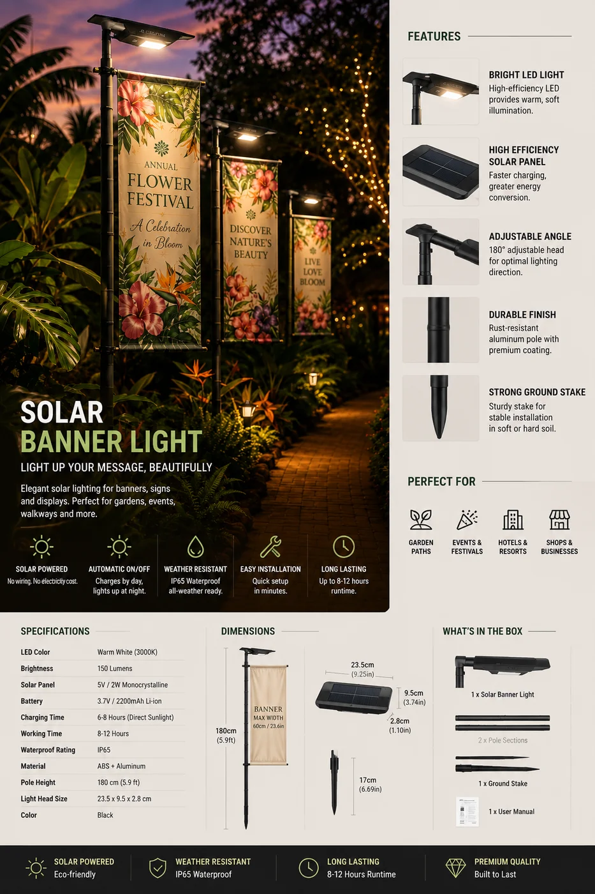

太阳能旗杆灯
抱箍式太阳能投射灯,通宵照亮旗帜——8W,6500K 下 600 流明,120° 宽光束,可调光伏板适配 15–40mm 灯杆,IP65 密封。

一款需求稳定的细分产品——政府大楼、使领馆、4S 店、学校和悬挂旗帜并希望通宵照亮的家庭。抱箍适配常见杆径(15–40mm),光伏板可朝向太阳,120° 光束一盏即可覆盖整面旗帜。磷酸铁锂与 IP65 让它全年户外耐用。
规格参数
| 功率 | 8W LED |
|---|---|
| 光通量 | 600 lm |
| 色温 | 6500K(冷白) |
| 电池 | 3600mAh 磷酸铁锂 |
| 光伏板 | 可调 3W |
| 适配灯杆 | 15–40mm 直径 |
| 光束角 | 120° 宽 |
| 续航时间 | 10–12 小时 |
| IP 防护等级 | IP65 |
| 认证 | CE + RoHS |
为什么选它
适配多数灯杆。可调抱箍(15–40mm)覆盖住宅、商用和机构旗杆。
整面旗帜覆盖。120° 光束与 600 流明,一盏照亮整面旗帜。
稳定的细分需求。是五金、安防和户外生活渠道可靠的加购 SKU。
已认证、支持 OEM。每份报价附 CE + RoHS;可定制品牌与包装。
为这些市场而建澳大利亚、西班牙、拉美和非洲的政府、机构与住宅渠道——一款常年走量的特色灯。